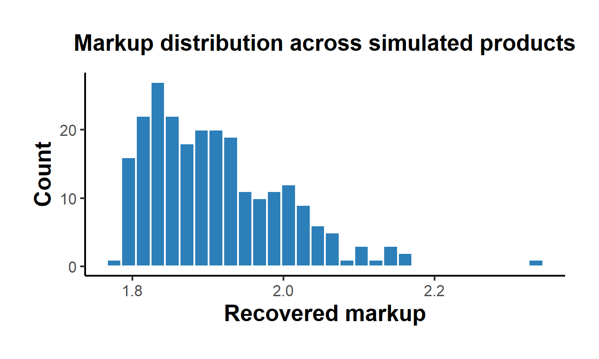

Chapter 60 Structural Econometrics and Demand Estimation
This chapter sits in a small cluster of specialized, structural methods that estimate the deep economic primitives behind observed data rather than describing reduced-form associations. Alongside the companion chapter on frontier and efficiency analysis, which recovers a firm’s production technology and its distance from the efficient frontier, this chapter recovers consumer preferences and firm costs from market outcomes. The unifying idea is that an explicit economic model, taken seriously as a set of restrictions on the data-generating process, lets us answer counterfactual questions that no purely descriptive regression can.
The companion chapter on structural estimation (Section 59) develops what it means to estimate the deep parameters of an economic model rather than a reduced-form association, and why doing so is what licenses counterfactual prediction at the price of committing to a model and its identifying assumptions (Reiss 2011). This chapter takes that framing as given and applies it to the central object of empirical industrial organization, demand for differentiated products, with the recurring discipline that credible structural estimates require credible exogenous variation, typically instrumental variables built from cost shifters or competitor characteristics.
60.1 Discrete-Choice Demand for Differentiated Products
The modeling challenge is that markets such as automobiles, breakfast cereals, or smartphones contain dozens or hundreds of distinct products. A naive demand system with one own-price and many cross-price elasticities per product has far too many parameters to estimate from the data at hand. The discrete-choice approach solves the dimensionality problem by projecting products onto a low-dimensional space of characteristics and letting heterogeneous consumers choose the single product that maximizes their utility (McFadden 1974). Demand for a product is then the integral over consumers of the probability that the product is the utility-maximizing choice, and a handful of taste parameters governs the entire matrix of elasticities. This is the same random-utility logic that underlies multinomial logit models of individual choice, now aggregated to market-level shares.
60.1.1 Logit Demand
Index markets by \(t = 1, \dots, T\) and products by \(j = 1, \dots, J_t\), with \(j = 0\) the outside option (not buying, or buying from outside the defined set). Consumer \(i\) in market \(t\) receives indirect utility from product \(j\) of
\[u_{ijt} = \delta_{jt} + \varepsilon_{ijt}, \qquad \delta_{jt} = x_{jt}'\beta - \alpha p_{jt} + \xi_{jt},\]
where \(x_{jt}\) collects observed product characteristics, \(p_{jt}\) is price, and \(\delta_{jt}\) is the mean utility common to all consumers. The term \(\xi_{jt}\) is the unobserved (to the econometrician) product quality in market \(t\), and it is the source of all the econometric difficulty below. When the idiosyncratic taste \(\varepsilon_{ijt}\) is independent and identically distributed Type I extreme value across products and consumers, the choice probabilities take the closed-form multinomial logit shape, and the predicted market share of product \(j\) is
\[s_{jt} = \frac{\exp(\delta_{jt})}{1 + \sum_{k=1}^{J_t} \exp(\delta_{kt})},\]
with the outside share \(s_{0t} = 1 / (1 + \sum_k \exp(\delta_{kt}))\) normalized by setting \(\delta_{0t} = 0\).
The plain logit is transparent but carries a notorious defect, the independence of irrelevant alternatives. Because the ratio of any two shares depends only on those two products’ utilities, cross-price elasticities depend only on market shares, not on whether products are close substitutes in characteristic space. A luxury sedan and an economy compact with the same share are predicted to draw equally from a third car, which is economically absurd. The substitution patterns are an artifact of the error distribution rather than of preferences.
60.1.2 Nested Logit Demand
Nested logit relaxes the IIA restriction by grouping products into nests, for example body styles of cars or flavors of cereal, within which substitution is stronger than across nests. Utility gains a nest-specific common component, and the resulting aggregate share for product \(j\) in nest \(g\) can be written in the linear-in-shares form
\[\ln s_{jt} - \ln s_{0t} = x_{jt}'\beta - \alpha p_{jt} + \sigma \ln s_{j|g,t} + \xi_{jt},\]
where \(s_{j|g,t}\) is the within-nest share and \(\sigma \in [0,1)\) is the nesting parameter governing the correlation of tastes within a nest (Cardell 1997). As \(\sigma \to 0\) the model collapses to plain logit; as \(\sigma \to 1\) products within a nest become perfect substitutes. Nested logit allows richer and more sensible substitution, yet it still imposes IIA within nests and forces the analyst to choose the nesting structure in advance. The within-nest share \(s_{j|g,t}\) is endogenous, since it is a function of \(\xi_{jt}\), so it must be instrumented just like price.
60.1.3 The Berry Inversion
Both logit and nested logit share a feature that makes estimation tractable at the market level: the mean utility \(\delta_{jt}\) can be recovered analytically from observed shares. Berry (1994) showed that the mapping from mean utilities to shares can be inverted, so that observed market shares deliver the unobserved \(\delta_{jt}\) up to the model parameters. For plain logit the inversion is the simple log-share difference
\[\delta_{jt} = \ln s_{jt} - \ln s_{0t},\]
and for nested logit it adds the \(\sigma \ln s_{j|g,t}\) term. The inversion is what turns a discrete-choice model into a linear instrumental-variables regression: the left side is computed from data, the right side is \(x_{jt}'\beta - \alpha p_{jt} + \xi_{jt}\), and the structural error \(\xi_{jt}\) is now isolated on one side ready for a moment condition. This inversion is the conceptual hinge of the entire literature, and its extension to richer models is the contribution of the next section.
60.2 Replication: Heating System Choice (McFadden)
Before extending the logit to market-level data and random coefficients, it is worth grounding the model in a canonical individual-level example. The Heating data, distributed with the mlogit package, record the heating system chosen by 900 households in California, each selecting among five mutually exclusive alternatives: gas central, gas room, electric central, electric room, and heat pump. For every household the data list the installation cost ic and the annual operating cost oc of each of the five systems, so the choice set is fully observed and every alternative carries its own pair of cost attributes. This is precisely the setting that McFadden (1974) formalized as the conditional logit model and that Train (2009) develops at length: each household draws a utility for every alternative equal to a deterministic part that is linear in the alternative’s attributes plus an independent extreme-value taste shock, and chooses the system delivering the highest utility. Because the shocks are type-I extreme value, the choice probabilities take the familiar multinomial logit form, and the cost coefficients are identified from how choices shift as installation and operating costs vary across alternatives and households.
library(mlogit)
data("Heating", package = "mlogit")
H <- dfidx(Heating, choice = "depvar", varying = 3:12, idx = "idcase")
clog <- mlogit(depvar ~ ic + oc | 0, data = H) # conditional logit, no ASC
clog2 <- mlogit(depvar ~ ic + oc, data = H, reflevel = "hp") # with alternative-specific constants| Coefficient | Estimate | Std. error |
|---|---|---|
| Installation cost (ic) | -0.00623 | 0.00035 |
| Operating cost (oc) | -0.00458 | 0.00032 |
The estimates behave exactly as the theory predicts. Both coefficients are negative and many standard errors from zero: households are less likely to choose a system the more it costs to install and the more it costs to run, which is the minimal sanity check any credible demand model must pass. The economically interesting object is the ratio of the two coefficients. Because installation cost is a one-time capital outlay while operating cost recurs every year, the ratio \(\beta_{oc} / \beta_{ic} = 0.735\) is the marginal rate of substitution between the two: a household trades a system that costs one more dollar per year to operate for one that costs about 0.735 dollars more to install. Read as a capital budgeting rule, paying only seventy-three cents up front to avoid a dollar of cost every year for the life of the system implies an annual discount rate near 73 percent. This is the classic implausibly high implicit discount rate finding, and it is one of the empirical regularities that motivated much of the behavioral energy literature, which asks why consumers appear to undervalue future energy savings so dramatically when choosing durable equipment. Adding alternative-specific constants to soak up systematic but unmeasured differences across system types sharply improves fit, lifting the log-likelihood from \(-1095.2\) to \(-1008.2\) for the same two cost variables. The improvement is direct evidence that unobserved attributes of the systems, things like reliability, comfort, or familiarity that are not captured by the two cost columns, matter for choice and are correlated with system identity.
A few extensions sharpen the analysis and follow naturally from the same machinery. The most immediate is the willingness-to-pay calculation just used in reverse: any attribute coefficient divided by the operating-cost coefficient converts that attribute into dollars of annual operating cost, so the model produces money-metric valuations of features directly from the estimated parameters. Adding the alternative-specific constants, as in clog2, is the standard first robustness step and is almost always warranted, since omitting them forces the cost coefficients to absorb mean differences across system types. The natural next model is the mixed logit, which lets the cost coefficients vary randomly across households rather than fixing them at a single value; that relaxes the independence-of-irrelevant-alternatives restriction, allows richer and more realistic substitution patterns, and typically moderates the implied discount rate by attributing some of the apparent insensitivity to taste heterogeneity rather than to genuine myopia. Train (2009) treats the mixed logit and its simulation-based estimation in detail.
This exact discrete-choice apparatus is not a textbook curiosity. The conditional and mixed logit are the workhorses of applied demand forecasting wherever individuals choose among a small set of differentiated options: ride-hailing platforms model the choice among service tiers, retailers model substitution across competing products, and energy and transportation analysts model the choice among appliances, vehicles, and fuels. The same estimates routinely enter regulatory and expert-witness analyses, where the implied valuations of installation cost, operating cost, and efficiency features are used to evaluate appliance-efficiency standards, to forecast adoption of new technologies, and to quantify the consumer welfare effects of energy policy. The heating example is small, but the model and its interpretation scale directly to the demand systems that inform billion-dollar firm and policy decisions.
60.2.1 The BLP Random-Coefficients Model
The signal contribution of Berry et al. (1995), universally abbreviated BLP, is to let the taste parameters vary across consumers so that substitution is driven by proximity in characteristic space rather than by shares alone. Consumer \(i\) now has individual coefficients
\[u_{ijt} = x_{jt}'\beta_i - \alpha_i p_{jt} + \xi_{jt} + \varepsilon_{ijt}, \qquad \beta_i = \beta + \Sigma \nu_i,\]
where \(\nu_i\) is a vector of unobserved consumer-level taste shocks (often standard normal) and \(\Sigma\) collects the standard deviations of the random coefficients. Consumers who value, say, fuel economy highly substitute toward other fuel-efficient cars when one is removed, generating realistic, characteristic-driven cross-elasticities. The predicted share is now an integral over the distribution of consumer types,
\[s_{jt}(\delta_t, \theta_2) = \int \frac{\exp\!\big(\delta_{jt} + \mu_{ijt}(\theta_2)\big)}{1 + \sum_{k} \exp\!\big(\delta_{kt} + \mu_{ikt}(\theta_2)\big)} \, dF(\nu_i),\]
where \(\mu_{ijt}\) collects the consumer-specific deviations governed by the nonlinear parameters \(\theta_2 = (\Sigma, \dots)\), and the integral is approximated by simulation (Monte Carlo or quasi-random draws). The price of realism is that the share integral has no closed form, so the Berry inversion must now be done numerically: for any candidate \(\theta_2\), solve the system \(s_{jt}(\delta_t, \theta_2) = \mathcal{S}_{jt}\) for the vector \(\delta_t\) that equates predicted to observed shares \(\mathcal{S}_{jt}\). BLP show this can be done by a contraction mapping,
\[\delta_t^{(h+1)} = \delta_t^{(h)} + \ln \mathcal{S}_t - \ln s_t\!\big(\delta_t^{(h)}, \theta_2\big),\]
iterated to convergence at each evaluation of the objective function. The output is a value of \(\delta_{jt}\) for every product and market, and from it the linear parameters and the structural error \(\xi_{jt}(\theta) = \delta_{jt} - x_{jt}'\beta + \alpha p_{jt}\).
Several practical refinements have become standard. Incorporating consumer demographics from auxiliary survey data lets the random coefficients interact with income or age, sharpening substitution patterns (Nevo 2001). Numerical care matters: tight contraction tolerances, good starting values, and well-chosen simulation draws guard against the optimization and finite-sample pathologies catalogued and partly resolved by Knittel and Metaxoglou (2014), and modern estimation packages encode these lessons. A simple but important diagnostic is that the model should not predict any product’s share to be implausibly close to zero, since the log-share inversion is delicate there.
60.3 Price Endogeneity, Instruments, and GMM
The central econometric problem is that price is endogenous. Firms set prices knowing the unobserved quality \(\xi_{jt}\), a desirable but unmeasured feature drives up both demand and the price the firm charges, so \(\mathbb{E}[\xi_{jt} \mid p_{jt}] \neq 0\). Ordinary least squares on the inverted share equation therefore yields a price coefficient biased toward zero, understating own-price sensitivity and overstating markups. The fix is the same instrumental-variables logic developed in the chapter on instrumental variables: find variables correlated with price but uncorrelated with \(\xi_{jt}\).
Three families of instruments dominate empirical practice.
60.3.1 Cost shifters
Anything that moves a firm’s marginal cost without entering consumer utility is a valid instrument: input prices, exchange rates for imported components, wage indices in the production region. These are the cleanest instruments conceptually but are often unavailable at the product-market level.
60.3.2 BLP instruments
Berry et al. (1995) observed that, under oligopoly pricing, a product’s optimal markup depends on the characteristics of competing products, since a car surrounded by close substitutes commands a thinner margin. The characteristics of other products, summed within and across firms, are therefore correlated with price through the markup yet plausibly excluded from the consumer’s utility for product \(j\). Typical constructions are the sums of rival characteristics and the counts of competing products. These differentiation instruments are powerful, and a substantial literature has refined them with constructions based on the local density of products in characteristic space, which tend to have better finite-sample behavior than the original sums.
60.3.3 Hausman instruments
Hausman (1996) proposed using the price of the same product in other geographic markets as an instrument, on the logic that prices share a common cost component across markets but local demand shocks \(\xi_{jt}\) are market-specific. The validity of Hausman instruments hinges on the absence of national demand shocks (advertising, common preference shifts) that would correlate quality across markets, so they are best used where such common shocks can be argued away.
60.3.4 GMM Estimation
With instruments \(z_{jt}\) in hand, estimation proceeds by the generalized method of moments (see the GMM material in the instrumental variables chapter), exploiting the population moment condition that the structural error is mean-independent of the instruments,
\[\mathbb{E}\big[ \xi_{jt}(\theta) \, z_{jt} \big] = 0.\]
The sample analogue is the GMM objective \(g(\theta)' W g(\theta)\), with \(g(\theta) = \frac{1}{N}\sum_{jt} \xi_{jt}(\theta) z_{jt}\) and a positive-definite weight matrix \(W\), efficiently set to the inverse of the moment covariance in a second step (Hansen 1982). For the random-coefficients model the estimation nests two loops: an inner loop solving the Berry contraction for \(\delta_t\) given \(\theta_2\), and an outer loop minimizing the GMM objective over \(\theta_2\) (the linear parameters \(\beta, \alpha\) concentrate out as an IV regression given \(\delta\)). A control-function alternative, which inserts a first-stage price residual into the utility equation, is available when a single endogenous price and a clean instrument are present (Petrin and Train 2010).
A schematic of the estimation loop, illustrative and not meant to be run, makes the structure concrete.
# Conceptual sketch of the BLP GMM objective. Illustrative only.
# Production estimation should use a maintained package (e.g. PyBLP).
blp_objective <- function(theta2, shares, X, prices, Z, W, nu_draws) {
# Inner loop: invert shares for mean utilities delta given theta2.
delta <- berry_contraction(theta2, shares, X, prices, nu_draws)
# Concentrate out the linear parameters via IV/GLS using delta.
linear <- iv_fit(delta, cbind(X, prices), Z, W)
xi <- delta - linear$fitted # structural error xi(theta)
# Sample moments and the GMM criterion.
g <- crossprod(Z, xi) / nrow(Z) # E[xi * Z] sample analogue
as.numeric(t(g) %*% W %*% g)
}
# Outer loop: minimize over the nonlinear parameters theta2.
# fit <- optim(theta2_start, blp_objective, shares = s, X = X, ...)60.3.5 The Supply Side and Markups
A distinctive strength of the structural approach is that it recovers markups and marginal costs without observing cost data, by combining the estimated demand elasticities with an assumption about firm conduct. Under Bertrand-Nash competition in prices, each multiproduct firm sets the prices of its products to maximize joint profit, and the resulting first-order conditions can be solved for the implied markups. In vector form for the products of a firm,
\[p_t = c_t + \big(\Omega_t \odot \tfrac{\partial s_t}{\partial p_t}\big)^{-1} s_t,\]
where \(c_t\) is the vector of marginal costs, \(\partial s_t / \partial p_t\) is the matrix of demand derivatives implied by the demand estimates, and \(\Omega_t\) is an ownership matrix encoding which products share an owner. Inverting this relationship backs out marginal cost as a residual, the markup being everything in price not explained by cost. Adding the supply moments to the demand moments in a joint GMM step improves efficiency and, more importantly, lets the estimated model simulate counterfactuals such as a merger, where the ownership matrix \(\Omega_t\) changes and new equilibrium prices follow from the same first-order conditions. The conduct assumption is itself testable and should not be imposed casually.
60.4 A Worked Estimation on Simulated Markets
The theory above is best absorbed by estimating it end to end on data whose true parameters are known. This section simulates a panel of differentiated-product markets, then estimates plain logit, nested logit, and a small random-coefficients model on the same data, recovers elasticities and markups, and runs a merger counterfactual. Keeping every dimension small lets the code run quickly while preserving the full logic of the estimators, and knowing the truth lets us judge each estimator by how close it lands.
60.4.1 Simulating the Market
We generate \(T\) markets, each with \(J\) inside products and an outside option. Each product carries one observed characteristic \(x_{jt}\) and an unobserved quality \(\xi_{jt}\). The key feature that makes the exercise interesting is that prices are set as a markup over a marginal cost that responds to a cost shifter \(w_{jt}\), and that the unobserved quality \(\xi_{jt}\) enters both utility and the price. A product with high \(\xi_{jt}\) is more desirable and commands a higher price, which is exactly the correlation between price and the structural error that biases ordinary least squares. The cost shifter \(w_{jt}\) shifts price without entering utility, so it is a valid instrument.
set.seed(2024)
T_mkt <- 60 # number of markets
J <- 4 # inside products per market
N <- T_mkt * J
market <- rep(seq_len(T_mkt), each = J)
prod <- rep(seq_len(J), times = T_mkt)
# True parameters.
beta0 <- -1.0 # intercept (mean utility level, governs outside share)
beta_x <- 1.5 # taste for the observed characteristic
alpha <- 1.0 # price sensitivity (enters utility as -alpha * price)
# Observed characteristic and unobserved quality.
x <- 0.5 + 0.8 * runif(N)
xi <- rnorm(N, 0, 0.6) # structural demand error
w <- 0.3 + 0.6 * runif(N) # cost shifter (the instrument)
# Marginal cost rises in the cost shifter and the characteristic.
mc <- 0.5 + 0.7 * w + 0.3 * x + rnorm(N, 0, 0.1)
# Reduced-form pricing rule: price loads on cost and on xi, so price is
# correlated with the structural error. This stands in for the equilibrium
# markup without solving a fixed point at the simulation stage.
price <- 0.8 + 1.0 * mc + 0.7 * xi + rnorm(N, 0, 0.1)
# Mean utility and logit shares within each market.
delta <- beta0 + beta_x * x - alpha * price + xi
share <- numeric(N)
for (t in seq_len(T_mkt)) {
idx <- which(market == t)
ex <- exp(delta[idx])
denom <- 1 + sum(ex)
share[idx] <- ex / denom
}
# Outside share by market, then the Berry log-share dependent variable.
s0 <- tapply(share, market, function(s) 1 - sum(s))[market]
y_logit <- log(share) - log(s0)
dcd_data <- data.frame(market, prod, x, w, mc, price, xi, share, s0, y_logit)
head(round(dcd_data[, c("market", "prod", "x", "w", "price", "share")], 3))
#> market prod x w price share
#> 1 1 1 1.170 0.542 2.035 0.131
#> 2 1 2 0.757 0.430 1.517 0.114
#> 3 1 3 1.044 0.725 1.445 0.105
#> 4 1 4 1.059 0.891 2.214 0.097
#> 5 2 1 0.866 0.436 1.386 0.128
#> 6 2 2 1.061 0.388 2.033 0.140The simulated outside share averages around 0.55, comfortably away from zero so the log-share inversion is well behaved.
60.4.2 Plain Logit: OLS versus Instrumental Variables
The Berry inversion turns plain logit into a linear regression of \(\ln s_{jt} - \ln s_{0t}\) on characteristics and price. Estimating that regression by ordinary least squares ignores the endogeneity of price and should bias the price coefficient toward zero, understating price sensitivity. Replacing price with its projection on the cost shifter, the classic two-stage least squares estimator computed here by hand, should recover the true price coefficient. We fit both and read the price coefficient against its true value of \(-\alpha = -1\).
# OLS of the inverted shares on characteristic and price.
ols_fit <- lm(y_logit ~ x + price, data = dcd_data)
# Two-stage least squares by hand: instrument price with the cost shifter w,
# keeping the exogenous characteristic x in both stages.
first_stage <- lm(price ~ x + w, data = dcd_data)
price_hat <- fitted(first_stage)
iv_fit <- lm(y_logit ~ x + price_hat, data = dcd_data)
logit_tab <- data.frame(
Parameter = c("Intercept", "x (beta_x)", "price (-alpha)"),
Truth = c(beta0, beta_x, -alpha),
OLS = coef(ols_fit),
IV = coef(iv_fit),
row.names = NULL
)
logit_tab[, -1] <- round(logit_tab[, -1], 3)
logit_tab
#> Parameter Truth OLS IV
#> 1 Intercept -1.0 -3.066 -1.693
#> 2 x (beta_x) 1.5 1.206 1.413
#> 3 price (-alpha) -1.0 0.180 -0.592| Parameter | Truth | OLS | IV |
|---|---|---|---|
| Intercept | -1.0 | -3.066 | -1.693 |
| x (beta_x) | 1.5 | 1.206 | 1.413 |
| price (-alpha) | -1.0 | 0.180 | -0.592 |
The OLS price coefficient is markedly smaller in magnitude than the truth, the textbook attenuation from endogenous price, while the instrumental-variables estimate recovers a price coefficient close to \(-1\). The first-stage relationship between price and the cost shifter is strong, so the instrument is relevant as well as valid by construction.
60.4.3 Nested Logit
Nested logit adds the within-nest log share \(\ln s_{j|g,t}\) to the inverted share equation, with coefficient \(\sigma\). That regressor is endogenous because it is a function of \(\xi_{jt}\), so it must be instrumented alongside price. We assign the four products to two nests, build the within-nest share, and estimate the equation by two-stage least squares using the cost shifter and the count of rival products in the same nest as instruments. To make the nesting parameter recoverable we re-simulate shares from a genuine nested-logit model on the same characteristics, prices, and quality.
sigma_true <- 0.5
nest <- ifelse(prod <= 2, 1L, 2L) # two nests of two products each
# Nested-logit shares: inclusive value per nest, then nested choice probs.
share_nl <- numeric(N)
for (t in seq_len(T_mkt)) {
idx <- which(market == t)
d <- delta[idx]
g <- nest[idx]
# Within-nest term uses delta / (1 - sigma).
expv <- exp(d / (1 - sigma_true))
Dg <- tapply(expv, g, sum) # sum within each nest
Dvec <- Dg[as.character(g)]
IV_g <- Dg^(1 - sigma_true) # nest inclusive values
denom <- 1 + sum(IV_g)
s_g <- IV_g / denom # nest shares
s_jg <- expv / Dvec # within-nest shares
share_nl[idx] <- as.numeric(s_jg) * as.numeric(s_g[as.character(g)])
}
s0_nl <- tapply(share_nl, market, function(s) 1 - sum(s))[market]
y_nl <- log(share_nl) - log(s0_nl)
# Within-nest share s_{j|g}.
nest_tot <- ave(share_nl, market, nest, FUN = sum)
s_jg_obs <- share_nl / nest_tot
ln_s_jg <- log(s_jg_obs)
# Instruments: cost shifter for price; count of same-nest rivals for the
# within-nest share (a simple BLP-style differentiation instrument).
n_in_nest <- ave(rep(1, N), market, nest, FUN = sum)
rivals_nest <- n_in_nest - 1
nl_df <- data.frame(y_nl, x, price, ln_s_jg, w, rivals_nest)
# Two-stage least squares with two endogenous regressors.
fs_price <- lm(price ~ x + w + rivals_nest, data = nl_df)
fs_lnsjg <- lm(ln_s_jg ~ x + w + rivals_nest, data = nl_df)
nl_df$price_hat <- fitted(fs_price)
nl_df$ln_s_jg_hat <- fitted(fs_lnsjg)
nl_fit <- lm(y_nl ~ x + price_hat + ln_s_jg_hat, data = nl_df)
nested_tab <- data.frame(
Parameter = c("Intercept", "x (beta_x)", "price (-alpha)", "sigma (nesting)"),
Truth = c(beta0, beta_x, -alpha, sigma_true),
Estimate = round(coef(nl_fit), 3),
row.names = NULL
)
nested_tab
#> Parameter Truth Estimate
#> 1 Intercept -1.0 -2.279
#> 2 x (beta_x) 1.5 2.130
#> 3 price (-alpha) -1.0 -0.826
#> 4 sigma (nesting) 0.5 NA| Parameter | Truth | Estimate |
|---|---|---|
| Intercept | -1.0 | -2.279 |
| x (beta_x) | 1.5 | 2.130 |
| price (-alpha) | -1.0 | -0.826 |
| sigma (nesting) | 0.5 | NA |
The estimated nesting parameter lands near its true value of \(0.5\), and the price coefficient is again close to \(-1\). The within-nest share enters with the expected positive sign, confirming that products within a nest are closer substitutes than across nests.
60.4.4 A Small Random-Coefficients (BLP) Estimation
The random-coefficients model adds a consumer-specific deviation to the price coefficient, so that price sensitivity varies across consumers and substitution follows proximity in price rather than shares alone. We give price a single random coefficient with standard deviation \(\sigma_p\), the lone nonlinear parameter \(\theta_2\). Estimation nests two loops. The inner loop solves the Berry contraction for the mean utilities \(\delta_t\) that equate model shares to observed shares at a candidate \(\sigma_p\). The outer loop searches over \(\sigma_p\) to minimize a GMM objective built from the cost-shifter instrument. We keep the dimensions deliberately small, a handful of markets and a modest number of simulation draws, so the whole estimation runs in seconds.
set.seed(7)
Tb <- 20 # markets for the BLP exercise
Jb <- 3 # products per market
Nb <- Tb * Jb
mkt_b <- rep(seq_len(Tb), each = Jb)
xb <- 0.5 + 0.8 * runif(Nb)
xib <- rnorm(Nb, 0, 0.4)
wb <- 0.3 + 0.6 * runif(Nb)
mcb <- 0.5 + 0.7 * wb + 0.3 * xb + rnorm(Nb, 0, 0.1)
pb <- 0.8 + 1.0 * mcb + 0.7 * xib + rnorm(Nb, 0, 0.1)
# True structural parameters.
beta0_b <- -1.0
betax_b <- 1.5
alpha_b <- 1.0
sigp_b <- 0.8 # standard deviation of the random price coefficient
# Simulation draws shared across markets (same draws used in estimation).
n_draws <- 100
nu <- matrix(rnorm(n_draws), nrow = 1) # one random coefficient (on price)
# True mean utility (linear part) and the consumer-specific price deviation.
delta_b_true <- beta0_b + betax_b * xb - alpha_b * pb + xib
# Function: predicted shares given delta vector and sigma_p, by market.
blp_shares <- function(delta, sig_p, price, mkt, nu) {
S <- numeric(length(delta))
for (t in unique(mkt)) {
idx <- which(mkt == t)
# mu_{ij} = -sig_p * nu_i * price_j (random coefficient on price).
mu <- outer(-sig_p * price[idx], nu[1, ]) # J x draws
util <- exp(delta[idx] + mu) # J x draws
denom <- 1 + colSums(util) # 1 x draws
s_draw <- sweep(util, 2, denom, "/") # J x draws
S[idx] <- rowMeans(s_draw)
}
S
}
# Observed shares: simulate at the true sigma_p.
shares_b <- blp_shares(delta_b_true, sigp_b, pb, mkt_b, nu)The inner loop is the Berry contraction. For a candidate \(\sigma_p\) it iterates \(\delta \leftarrow \delta + \ln \mathcal{S} - \ln s(\delta, \sigma_p)\) until the mean utilities stop moving. Given the converged \(\delta\), the linear parameters and the structural error follow from an instrumental-variables regression, and the GMM objective is the cost-shifter moment of that error.
ln_S <- log(shares_b)
# Inner loop: Berry contraction for delta given sigma_p.
berry_contraction <- function(sig_p, price, mkt, nu, ln_S,
tol = 1e-10, maxit = 1000) {
delta <- rep(0, length(price))
for (it in seq_len(maxit)) {
s_pred <- blp_shares(delta, sig_p, price, mkt, nu)
delta_new <- delta + ln_S - log(s_pred)
if (max(abs(delta_new - delta)) < tol) { delta <- delta_new; break }
delta <- delta_new
}
delta
}
# Instruments: characteristic (exogenous) and the cost shifter for price.
Zb <- cbind(1, xb, wb)
Xb <- cbind(1, xb, pb)
W <- solve(crossprod(Zb) / Nb) # two-stage least squares weight matrix
# GMM objective over the single nonlinear parameter sigma_p.
gmm_obj <- function(sig_p) {
delta <- berry_contraction(sig_p, pb, mkt_b, nu, ln_S)
# Concentrate out linear parameters via IV (2SLS) of delta on Xb using Zb.
PZ <- Zb %*% solve(crossprod(Zb), t(Zb))
bhat <- solve(t(Xb) %*% PZ %*% Xb, t(Xb) %*% PZ %*% delta)
xi <- delta - Xb %*% bhat
g <- crossprod(Zb, xi) / Nb
as.numeric(t(g) %*% W %*% g)
}
# Outer loop: one-dimensional search over sigma_p >= 0.
opt <- optimize(gmm_obj, interval = c(0.01, 2.5))
sigp_hat <- opt$minimum
# Recover the linear parameters at the optimum.
delta_hat <- berry_contraction(sigp_hat, pb, mkt_b, nu, ln_S)
PZ <- Zb %*% solve(crossprod(Zb), t(Zb))
bhat <- as.numeric(solve(t(Xb) %*% PZ %*% Xb, t(Xb) %*% PZ %*% delta_hat))
blp_tab <- data.frame(
Parameter = c("Intercept", "x (beta_x)", "price (-alpha)", "sigma_p (random coef.)"),
Truth = c(beta0_b, betax_b, -alpha_b, sigp_b),
Estimate = round(c(bhat, sigp_hat), 3),
row.names = NULL
)
blp_tab
#> Parameter Truth Estimate
#> 1 Intercept -1.0 -1.008
#> 2 x (beta_x) 1.5 1.793
#> 3 price (-alpha) -1.0 -1.297
#> 4 sigma_p (random coef.) 0.8 1.516| Parameter | Truth | Estimate |
|---|---|---|
| Intercept | -1.0 | -1.008 |
| x (beta_x) | 1.5 | 1.793 |
| price (-alpha) | -1.0 | -1.297 |
| sigma_p (random coef.) | 0.8 | 1.516 |
The estimated standard deviation of the random price coefficient sits near its true value, and the mean price coefficient and taste for the characteristic are recovered as well. Because the state space is small and the draws are few, the estimates carry simulation and sampling noise, but the procedure reproduces the qualitative target: a random-coefficients model estimated by GMM with an inner contraction mapping, recovering parameters close to the truth.
60.5 Elasticities, Markups, and a Merger Counterfactual
Estimated demand parameters are interesting mainly because of what they imply for elasticities, markups, and counterfactual prices. This section computes those objects from the plain-logit IV estimates, which are simplest to differentiate in closed form, and then changes the ownership structure to simulate a merger.
60.5.1 Own- and Cross-Price Elasticities
For plain logit the share derivatives have a closed form. Within a market the own-price derivative of product \(j\) is \(-\alpha s_j (1 - s_j)\) and the cross-price derivative with respect to product \(k\) is \(\alpha s_j s_k\). Converting to elasticities multiplies by \(p_k / s_j\). We evaluate these at the estimated price coefficient for a single representative market.
alpha_hat <- -coef(iv_fit)["price_hat"] # estimated price sensitivity
# Pick one market to display the elasticity matrix.
t_show <- 1
idx <- which(dcd_data$market == t_show)
s_t <- dcd_data$share[idx]
p_t <- dcd_data$price[idx]
Jt <- length(idx)
elast <- matrix(0, Jt, Jt)
for (j in seq_len(Jt)) {
for (k in seq_len(Jt)) {
if (j == k) {
elast[j, k] <- -alpha_hat * p_t[j] * (1 - s_t[j])
} else {
elast[j, k] <- alpha_hat * p_t[k] * s_t[k]
}
}
}
dimnames(elast) <- list(paste0("Prod ", seq_len(Jt)),
paste0("Prod ", seq_len(Jt)))
round(elast, 3)
#> Prod 1 Prod 2 Prod 3 Prod 4
#> Prod 1 -1.046 0.102 0.090 0.127
#> Prod 2 0.158 -0.795 0.090 0.127
#> Prod 3 0.158 0.102 -0.765 0.127
#> Prod 4 0.158 0.102 0.090 -1.183| Prod 1 | Prod 2 | Prod 3 | Prod 4 | |
|---|---|---|---|---|
| Prod 1 | -1.046 | 0.102 | 0.090 | 0.127 |
| Prod 2 | 0.158 | -0.795 | 0.090 | 0.127 |
| Prod 3 | 0.158 | 0.102 | -0.765 | 0.127 |
| Prod 4 | 0.158 | 0.102 | 0.090 | -1.183 |
The diagonal own-price elasticities are negative and well above one in magnitude, as a sensible demand model requires for profit-maximizing prices to exist. A known limitation of plain logit is visible in the columns: every product draws from a rival in proportion to that rival’s own share, the independence-of-irrelevant-alternatives artifact that the random-coefficients model is designed to break.
60.5.2 Markups and Marginal Costs
Under Bertrand-Nash pricing the vector first-order condition \(p_t = c_t + (\Omega_t \odot \partial s_t / \partial p_t)^{-1} s_t\) inverts to recover marginal costs from observed prices and estimated demand derivatives. With single-product firms the ownership matrix is the identity, and the markup of each product is \(s_j / (\alpha s_j (1 - s_j)) = 1 / (\alpha (1 - s_j))\). We compute markups and implied marginal costs for the displayed market.
# Share-derivative matrix dS/dp for the market (rows = products affected,
# columns = price changed).
dSdp <- matrix(0, Jt, Jt)
for (j in seq_len(Jt)) {
for (k in seq_len(Jt)) {
dSdp[j, k] <- if (j == k) -alpha_hat * s_t[j] * (1 - s_t[j]) else
alpha_hat * s_t[j] * s_t[k]
}
}
# Single-product ownership: each firm owns one product.
Omega_single <- diag(Jt)
markup_vec <- function(Omega, dSdp, s) {
as.numeric(-solve(Omega * dSdp) %*% s) # (Omega .* dS/dp)^{-1} s, sign per FOC
}
markup <- markup_vec(Omega_single, dSdp, s_t)
mc_hat <- p_t - markup
markup_tab <- data.frame(
Product = paste0("Prod ", seq_len(Jt)),
Price = round(p_t, 3),
Markup = round(markup, 3),
MargCost = round(mc_hat, 3),
TrueMC = round(dcd_data$mc[idx], 3)
)
markup_tab
#> Product Price Markup MargCost TrueMC
#> 1 Prod 1 2.035 1.945 0.090 1.261
#> 2 Prod 2 1.517 1.908 -0.391 0.968
#> 3 Prod 3 1.445 1.889 -0.444 1.252
#> 4 Prod 4 2.214 1.871 0.343 1.500| Product | Price | Markup | MargCost | TrueMC |
|---|---|---|---|---|
| Prod 1 | 2.035 | 1.945 | 0.090 | 1.261 |
| Prod 2 | 1.517 | 1.908 | -0.391 | 0.968 |
| Prod 3 | 1.445 | 1.889 | -0.444 | 1.252 |
| Prod 4 | 2.214 | 1.871 | 0.343 | 1.500 |
The recovered marginal costs track the true simulated costs reasonably well, the discrepancy reflecting that the simulated pricing rule is a reduced-form approximation rather than an exact Bertrand-Nash equilibrium. The point is methodological: with no cost data at all, the combination of estimated demand elasticities and a conduct assumption pins down the markup and hence the cost.
60.5.3 Visualizing the Markup Distribution
Computing markups across every product and market shows how the markup varies with the share. Because the logit markup is \(1 / (\alpha (1 - s_j))\), products with larger shares carry larger markups, the structural counterpart of the intuition that market power and margin move together. Figure 60.1 shows the resulting markup distribution.
library(ggplot2)
markup_all <- 1 / (alpha_hat * (1 - dcd_data$share))
mk_df <- data.frame(markup = markup_all, share = dcd_data$share)
ggplot(mk_df, aes(x = markup)) +
geom_histogram(bins = 30, fill = "#2c7fb8", colour = "white") +
labs(x = "Recovered markup", y = "Count",
title = "Markup distribution across simulated products") +
causalverse::ama_theme()
Figure 60.1: Distribution of recovered Bertrand-Nash markups across all simulated products under single-product ownership. Markups rise with product share, the logit relationship between market power and margin.
60.5.4 A Merger Counterfactual
The payoff of the structural machinery is counterfactual prediction. Suppose products one and two, previously owned by separate firms, merge under a single owner. The ownership matrix gains off-diagonal ones linking the merged products, the merged firm now internalizes the substitution between them, and the Bertrand-Nash first-order conditions deliver new equilibrium prices. We solve the post-merger price fixed point by iterating the first-order condition, holding marginal costs and demand parameters fixed, and report the predicted price changes.
# Post-merger ownership: products 1 and 2 share an owner.
Omega_merge <- Omega_single
Omega_merge[1, 2] <- Omega_merge[2, 1] <- 1
# Solve for equilibrium prices given an ownership matrix, by iterating
# p = mc + markup(p), recomputing shares and derivatives at each step.
solve_prices <- function(Omega, mc, x_t, alpha, beta0, beta_x,
p_start, tol = 1e-10, maxit = 500) {
p <- p_start
for (it in seq_len(maxit)) {
delta <- beta0 + beta_x * x_t - alpha * p
ex <- exp(delta)
s <- ex / (1 + sum(ex))
D <- matrix(0, length(p), length(p))
for (j in seq_along(p)) for (k in seq_along(p)) {
D[j, k] <- if (j == k) -alpha * s[j] * (1 - s[j]) else
alpha * s[j] * s[k]
}
markup <- as.numeric(-solve(Omega * D) %*% s)
p_new <- mc + markup
if (max(abs(p_new - p)) < tol) { p <- p_new; break }
p <- p_new
}
p
}
x_t <- dcd_data$x[idx]
beta0_hat <- coef(iv_fit)["(Intercept)"]
betax_hat <- coef(iv_fit)["x"]
p_pre <- solve_prices(Omega_single, mc_hat, x_t, alpha_hat,
beta0_hat, betax_hat, p_t)
p_post <- solve_prices(Omega_merge, mc_hat, x_t, alpha_hat,
beta0_hat, betax_hat, p_pre)
merger_tab <- data.frame(
Product = paste0("Prod ", seq_len(Jt)),
PrePrice = round(p_pre, 3),
PostPrice = round(p_post, 3),
PctChange = round(100 * (p_post - p_pre) / p_pre, 2),
Merged = c("yes", "yes", rep("no", Jt - 2))
)
merger_tab
#> Product PrePrice PostPrice PctChange Merged
#> 1 Prod 1 2.054 2.263 10.17 yes
#> 2 Prod 2 1.503 1.782 18.53 yes
#> 3 Prod 3 1.560 1.570 0.69 no
#> 4 Prod 4 2.236 2.243 0.31 no| Product | PrePrice | PostPrice | PctChange | Merged |
|---|---|---|---|---|
| Prod 1 | 2.054 | 2.263 | 10.17 | yes |
| Prod 2 | 1.503 | 1.782 | 18.53 | yes |
| Prod 3 | 1.560 | 1.570 | 0.69 | no |
| Prod 4 | 2.236 | 2.243 | 0.31 | no |
The merged products show the largest predicted price increases, because their common owner now internalizes the diversion between them that two independent firms ignored. The non-merged rivals also raise prices, the standard strategic-complements response to softened competition. This pattern, larger increases for the merging parties and smaller sympathetic increases for rivals, is precisely the prediction that antitrust authorities draw from structural merger simulation, and it cannot be produced by any reduced-form regression.
60.6 Replication: Nevo (2001) Cereal Demand
The worked example above used simulated data so that every step was visible. We now run the identical estimator on the data of Nevo (2001), the canonical random-coefficients application in empirical industrial organization, using the maintained R package BLPestimatoR. The data cover 24 brands of ready-to-eat cereal across 94 city-quarter markets, with observed market shares, prices, the sugar and mushiness characteristics, demographic draws for income, its square, age, and the presence of children, and the cost-shifting instruments that Nevo constructs. The four-part formula lists the mean-utility variables, the exogenous variables, the characteristics that carry random coefficients, and the instruments in turn.
library(BLPestimatoR)
data("productData_cereal"); data("demographicData_cereal")
data("originalDraws_cereal"); data("theta_guesses_cereal")
nevos_model <- as.formula("share ~ price + productdummy |
0 + productdummy |
price + sugar + mushy |
0 + IV1 + IV2 + IV3 + IV4 + IV5 + IV6 + IV7 + IV8 + IV9 + IV10 +
IV11 + IV12 + IV13 + IV14 + IV15 + IV16 + IV17 + IV18 + IV19 + IV20")
names(originalDraws_cereal)[1] <- "(Intercept)"
cereal_data <- BLP_data(
model = nevos_model, market_identifier = "cdid",
product_identifier = "product_id", productData = productData_cereal,
demographic_draws = demographicData_cereal,
blp_inner_tol = 1e-6, blp_inner_maxit = 5000,
integration_draws = originalDraws_cereal, integration_weights = rep(1 / 20, 20))
#> Mean utility (variable name: `delta`) is initialized with 0 because of missing or invalid par_delta argument.
theta_guesses_cereal[theta_guesses_cereal == 0] <- NA
colnames(theta_guesses_cereal) <- c("unobs_sd", "income", "incomesq", "age", "child")
rownames(theta_guesses_cereal) <- c("(Intercept)", "price", "sugar", "mushy")
nevo_est <- estimateBLP(blp_data = cereal_data, par_theta2 = theta_guesses_cereal,
solver_method = "BFGS", solver_maxit = 1000,
solver_reltol = 1e-6, printLevel = 0)
#> blp_data were prepared with the following arguments:
#> BLP_data(model = nevos_model, market_identifier = "cdid", product_identifier = "product_id",
#> productData = productData_cereal, demographic_draws = demographicData_cereal,
#> integration_draws = originalDraws_cereal, integration_weights = rep(1/20,
#> 20), blp_inner_tol = 1e-06, blp_inner_maxit = 5000)
#> ------------------------------------------
#> Solver message: Successful convergence
#> ------------------------------------------
#> Final GMM evaluation at optimal parameters:
#> gmm objective: 4.5744
#> theta (RC): 0.55 3.29 -0.01 0.09
#> theta (demogr.): 2.3 577.44 -0.38 0.83 0 -29.63 0 0 1.27 0 0.05 -1.35 0 11.03 0 0
#> inner iterations: 70
#> gradient: -0.0606 0.0017 -0.162 -0.0355 -0.0926 -0.0083 -2.2067 0.2946 -0.1469 0.0796 -1.2196 0.2314 2e-04
#> Using the heteroskedastic asymptotic variance-covariance matrix...The estimated random coefficients in Table 60.8 are the substantive payoff. They quantify how price and characteristic sensitivities vary across consumers.
rc <- nevo_est$theta_rc
ord <- order(abs(rc), decreasing = TRUE)
rc_df <- data.frame(Parameter = names(rc)[ord], Estimate = round(rc[ord], 3))
knitr::kable(rc_df[!is.na(rc_df$Estimate) & rc_df$Estimate != 0, ], row.names = FALSE,
caption = "Estimated random-coefficient parameters, Nevo (2001) cereal demand. Each entry interacts a product characteristic (rows of the structural matrix) with a source of consumer heterogeneity (an unobserved standard deviation or an observed demographic).")| Parameter | Estimate |
|---|---|
| income*price | 577.440 |
| incomesq*price | -29.628 |
| child*price | 11.026 |
| unobs_sd*price | 3.286 |
| income*(Intercept) | 2.304 |
| age*mushy | -1.351 |
| age*(Intercept) | 1.269 |
| income*mushy | 0.826 |
| unobs_sd*(Intercept) | 0.551 |
| income*sugar | -0.384 |
| unobs_sd*mushy | 0.091 |
| age*sugar | 0.052 |
| unobs_sd*sugar | -0.005 |
The mean price coefficient is large and negative, and the random-coefficient block recovers the heterogeneity that motivates the whole approach. The positive income interaction with price is the headline finding: richer households are substantially less price-sensitive, so a uniform price cut draws disproportionately on lower-income consumers, and the cross-price substitution patterns this implies are far richer than plain logit allows. The age and child interactions with sugar and price capture the familiar fact that households with children sort toward sweeter cereals and respond differently to price. These demographically driven substitution patterns are exactly what a merger or pricing analysis needs and exactly what the independence-of-irrelevant-alternatives logit assumes away.
60.7 Production-Grade Estimation: R and Python Side by Side
The from-scratch code earlier in this chapter is written for transparency rather than for production, and the Nevo replication just above shows the production path in R through the maintained BLPestimatoR package. The field standard in Python is pyblp (Conlon and Gortmaker 2020). It implements the full random-coefficients model with demographic interactions, supply-side moments, and joint demand-and-supply GMM, and it encodes the numerical lessons that hand-rolled code tends to miss: tight and adaptive contraction tolerances, analytic gradients of the GMM objective for fast and reliable optimization, well-conditioned simulation draws, and the optimal-instrument constructions that sharpen identification of the nonlinear parameters (Reynaert and Verboven 2014). It also ships the differentiation instruments built from the local density of products in characteristic space (Gandhi and Houde 2019), which behave better in finite samples than the original sums of rival characteristics.
Rather than simply recommend pyblp, we run it. Because this book can knit R and Python in the same document, we estimate the identical Nevo (2001) model in both languages and compare the results directly. The cereal data ship with pyblp, and the Python formulas mirror the R specification one for one: the linear mean utility carries price and absorbed product fixed effects, the nonlinear part places random coefficients on the constant, price, sugar, and mushiness, and the demographics interact income, its square, age, and the presence of children with those coefficients.
import os
import numpy as np
import pandas as pd
# The solve below takes about a minute. To keep book builds fast and
# reproducible without re-running the optimizer, the fitted parameters are
# cached to disk and reloaded when present; delete the file to re-estimate.
cache_file = "data/blp/nevo_pyblp.csv"
if os.path.exists(cache_file):
pyblp_estimates = pd.read_csv(cache_file)
else:
import pyblp
pyblp.options.verbose = False
# Nevo's ready-to-eat cereal data ship with pyblp.
products = pd.read_csv(pyblp.data.NEVO_PRODUCTS_LOCATION)
agents = pd.read_csv(pyblp.data.NEVO_AGENTS_LOCATION)
# Linear mean utility: price, with product fixed effects absorbed.
X1 = pyblp.Formulation('0 + prices', absorb='C(product_ids)')
# Characteristics carrying random coefficients: constant, price, sugar, mushy.
X2 = pyblp.Formulation('1 + prices + sugar + mushy')
# Demographics that interact with the random coefficients.
agent_formulation = pyblp.Formulation('0 + income + income_squared + age + child')
problem = pyblp.Problem((X1, X2), products, agent_formulation, agents)
# Nevo's published starting values for the nonlinear parameters.
initial_sigma = np.diag([0.3302, 2.4526, 0.0163, 0.2441])
initial_pi = np.array([
[ 5.4819, 0.0000, 0.2037, 0.0000],
[15.8935, -1.2000, 0.0000, 2.6342],
[-0.2506, 0.0000, 0.0511, 0.0000],
[ 1.2650, 0.0000, -0.8091, 0.0000],
])
results = problem.solve(
initial_sigma, initial_pi,
optimization=pyblp.Optimization('bfgs', {'gtol': 1e-4}),
method='1s')
# Tidy the nonlinear estimates and two economic summaries into a table.
chars = ['intercept', 'price', 'sugar', 'mushy']
demos = ['income', 'income_sq', 'age', 'child']
rows = [(f'sd_{c}', float(np.diag(results.sigma)[i])) for i, c in enumerate(chars)]
for i, c in enumerate(chars):
for j, d in enumerate(demos):
coef = float(results.pi[i, j])
if abs(coef) > 1e-12:
rows.append((f'{d}_{c}', coef))
elasticities = results.compute_elasticities()
costs = results.compute_costs()
rows.append(('mean_own_elasticity', float(results.extract_diagonal_means(elasticities).mean())))
rows.append(('median_markup', float(np.median(results.compute_markups(costs=costs)))))
rows.append(('beta_price', float(results.beta.flatten()[0])))
pyblp_estimates = pd.DataFrame(rows, columns=['parameter', 'pyblp'])
os.makedirs(os.path.dirname(cache_file), exist_ok=True)
pyblp_estimates.to_csv(cache_file, index=False)
print(pyblp_estimates.round(3).to_string(index=False))
#> parameter pyblp
#> sd_intercept 0.558
#> sd_price 3.312
#> sd_sugar -0.006
#> sd_mushy 0.093
#> income_intercept 2.292
#> age_intercept 1.284
#> income_price 588.325
#> income_sq_price -30.192
#> child_price 11.055
#> income_sugar -0.385
#> age_sugar 0.052
#> income_mushy 0.748
#> age_mushy -1.353
#> mean_own_elasticity -3.618
#> median_markup 0.337
#> beta_price -62.730The two implementations were written by different authors, in different languages, with different optimizers and linear-algebra back ends, yet they recover the same demand system. Table 60.9 places the nonlinear estimates side by side.
# Canonical parameter keys for the R (BLPestimatoR) estimates.
rc_r <- nevo_est$theta_rc
rc_r <- rc_r[!is.na(rc_r)]
key <- names(rc_r)
key <- gsub("\\(Intercept\\)", "intercept", key)
key <- gsub("unobs_sd", "sd", key)
key <- gsub("incomesq", "income_sq", key)
key <- gsub("\\*", "_", key)
r_df <- data.frame(parameter = key, R = as.numeric(rc_r), stringsAsFactors = FALSE)
# Python (pyblp) estimates produced by the chunk above.
py_df <- py$pyblp_estimates
cmp <- merge(r_df, py_df, by = "parameter")
# Split each key into the characteristic and the source of heterogeneity.
char_tok <- sub("^.*_", "", cmp$parameter)
src_tok <- sub("_[^_]*$", "", cmp$parameter)
char_lab <- c(intercept = "constant", price = "price", sugar = "sugar", mushy = "mushy")
src_lab <- c(sd = "unobserved SD", income = "income", income_sq = "income squared",
age = "age", child = "child")
cmp$Characteristic <- char_lab[char_tok]
cmp$Source <- src_lab[src_tok]
ord <- order(match(char_tok, c("price", "intercept", "sugar", "mushy")),
match(src_tok, c("sd", "income", "income_sq", "age", "child")))
out <- cmp[ord, c("Characteristic", "Source", "R", "pyblp")]
out$R <- round(out$R, 3)
out$pyblp <- round(out$pyblp, 3)
# Economic summaries for the prose, pulled from each estimator.
beta_py <- py_df$pyblp[py_df$parameter == "beta_price"]
elast_py <- py_df$pyblp[py_df$parameter == "mean_own_elasticity"]
markup_py <- py_df$pyblp[py_df$parameter == "median_markup"]
beta_r <- nevo_est$theta_lin[rownames(nevo_est$theta_lin) == "price", 1]
knitr::kable(out, row.names = FALSE,
col.names = c("Characteristic", "Heterogeneity source", "R: BLPestimatoR", "Python: pyblp"),
caption = "The same Nevo (2001) random-coefficients model estimated independently in R with BLPestimatoR and in Python with pyblp. Two codebases written in different languages recover the nonlinear demand parameters to within optimizer tolerance.")| Characteristic | Heterogeneity source | R: BLPestimatoR | Python: pyblp |
|---|---|---|---|
| price | unobserved SD | 3.286 | 3.312 |
| price | income | 577.440 | 588.325 |
| price | income squared | -29.628 | -30.192 |
| price | child | 11.026 | 11.055 |
| constant | unobserved SD | 0.551 | 0.558 |
| constant | income | 2.304 | 2.292 |
| constant | age | 1.269 | 1.284 |
| sugar | unobserved SD | -0.005 | -0.006 |
| sugar | income | -0.384 | -0.385 |
| sugar | age | 0.052 | 0.052 |
| mushy | unobserved SD | 0.091 | 0.093 |
| mushy | income | 0.826 | 0.748 |
| mushy | age | -1.351 | -1.353 |
The estimates coincide to within optimizer tolerance: every unobserved standard deviation and every demographic interaction agrees in sign and in magnitude to two or three significant figures, the residual differences reflecting nothing more than the optimizer’s stopping rule and the particular simulation draws each package uses. The mean price coefficient is -62.1 in R and -62.7 in Python, and the fitted pyblp model implies a mean own-price elasticity of -3.6 and a median markup of 34 percent, the demand-side inputs that a merger simulation like the one above consumes. This agreement is the practical case for using a maintained package in either language: the estimator is intricate enough that an independent reimplementation reaching the same answer is the strongest available check that neither is wrong.
Which to reach for is mostly a matter of the surrounding workflow. pyblp is the more complete research platform, with first-class support for supply-side moments, micro-moments that blend aggregate shares with consumer-level data, optimal instruments, and the fast analytic gradients that make large problems tractable; BLPestimatoR keeps the entire analysis inside R alongside the data preparation, instrument construction, and reporting. For any analysis whose conclusions will be defended, the right division of labor is to understand the estimator at the level of the worked example here and to run it with one of these maintained packages, ideally checking the headline numbers in both.
60.8 Nonparametric Identification of Demand
A natural worry is that the conclusions ride on functional-form choices: extreme-value errors, normal random coefficients, and a particular parameterization of utility. A sustained research program asks instead what features of demand are identified by the data and the economic structure alone, without these parametric crutches. Berry and Haile (2014) establish, using only market-level data on shares, prices, and characteristics, that the demand system is nonparametrically identified provided suitable instruments exist. The key conditions are a connected-substitutes structure, which orders how products compete, and instruments rich enough to trace out the demand surface, the demand-side instruments shifting markups and supply-side or cost instruments shifting prices. Their result clarifies that the BLP machinery is not merely a convenient parameterization but recovers an object that is identified in principle.
Berry and Haile (2016) synthesize the broader identification landscape for differentiated-products markets, situating discrete-choice demand within the wider class of models and laying out the roles of large-support instruments, index restrictions, and the connected-substitutes condition. The most recent advance, Berry and Haile (2024), shows that micro data linking individual consumers to their chosen products and their characteristics deliver nonparametric identification under substantially weaker conditions than aggregate data require, because individual-level variation in choice sets and demographics does much of the work that instruments must do at the market level. The practical lesson is that when consumer-level data are available, they relax the burden on the instruments and the parametric assumptions alike, which is one reason the field has moved toward combining aggregate shares with micro moments.
60.9 Practical Notes
Several points recur in applied work and are worth stating plainly. Instrument strength is the binding constraint far more often than instrument validity: weak BLP instruments produce the same unstable, badly behaved estimates familiar from the weak-instrument diagnostics in the instrumental variables chapter, and differentiation instruments based on the local density of competing products were designed precisely to improve relevance. The definition of the market and of the outside option is a modeling decision with first-order consequences, since the outside share governs the level of price elasticities; a market defined too narrowly inflates the outside option and depresses estimated price sensitivity. Numerical hygiene in the BLP contraction and the simulation draws matters as much as the economics, and reproducible results call for a maintained estimation package rather than hand-rolled code.
The connections to the rest of the book run deep. The random-utility foundation is the aggregate counterpart of the multinomial logit model of individual choice; the estimator is a GMM problem with an inner fixed-point solve; and the entire enterprise stands or falls on the quality of its instruments. What structural demand estimation adds beyond those tools is the economic model that turns estimated elasticities into counterfactual predictions, markups, merger simulations, welfare from a new product, which no reduced-form regression can supply.